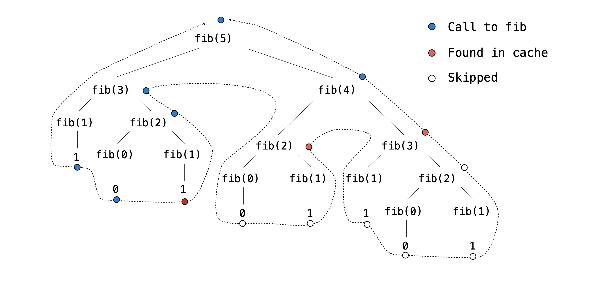

计算机辅助打字软件

程序员的梦想是
抽象、递归，以及
打字飞快。
引言
重要的提交说明：要获得满分：
- 在 07/14（周二）之前提交并完成 Phase 1 和 Phase 2，可得 1 分。
- 在 07/17（周五）之前提交并完成所有 phase。
请按顺序尝试这些题目并运行
ok测试，因为后面的一些题目依赖于前面题目的正确实现。整个项目可以由两人合作完成。这里提供了关于 结对编程 以及使用 VS Code 进行远程协作的指导。
如果在 07/16（周四）之前提交整个项目，可以获得 1 分加分。
在这个项目中，你将编写一个测量打字速度的程序。此外，你还会实现打字自动纠错，这个功能会在用户输入完一个单词后尝试纠正它的拼写。本项目灵感来源于 typeracer。
最终成果
我们对该项目的官方解答可以在 cats.cs61a.org 上体验。现在欢迎随意试用。当你完成这个项目时，你将亲手实现其中很大一部分，包括多人模式！
下载起始文件
你可以把整个项目代码下载为一个 zip 压缩包。本项目包含若干文件，但你只需要修改 cats.py。压缩包中包含以下文件：
cats.py：打字测试的逻辑。utils.py：用于处理文件和字符串的工具函数。ucb.py：AHUT_1A 项目的工具函数。data/sample_paragraphs.txt：用于打字的文本样本。这些是关于各种主题的 scraped 维基百科文章。data/common_words.txt：常见的 按词频排序的英语单词。data/words.txt：更多的 按词频排序的英语单词。data/final_diff_words.txt：更多英文单词！data/testcases.out：可选的 Final Diff 扩展的测试用例。cats_gui.py：基于网页的图形用户界面（GUI）的 Web 服务器。gui_files：图形用户界面（GUI）所需文件的目录。multiplayer：支持多人模式所需文件的目录。favicons：图标目录。images：图片目录。ok、cats.ok、tests：测试文件。score.py：可选的 Final Diff 扩展的一部分。
事务安排
你需要提交以下文件：
- Provenance
.zip文件
对于我们要求你完成的函数，我们可能会提供一些初始代码。如果你不想使用这些代码，可以删掉它们，从零开始写。你也可以按自己的需要添加新的函数定义。
但是，请不要修改任何其他函数，也不要编辑上面未列出的文件，否则你的代码可能无法通过自动评分程序的测试。另外，请不要改动任何函数签名（名称、参数顺序或参数个数）。
在整个项目中，你都应该测试代码的正确性。经常测试是个好习惯，这样容易定位问题。但也不要测试得过于频繁，要留出时间把问题想清楚。
我们提供了一个名为 ok 的自动评分程序，帮助你测试代码并跟踪进度。第一次运行时，它会要求你通过网页浏览器登录 Ok 账号，请照做。每次运行 ok，它都会把你的工作和进度备份到我们的服务器上。
ok 的主要用途是测试你的实现。
如果你想交互式地测试代码，可以运行
python3 ok -q [question number] -i并填入对应的题目编号（例如
01）。它会运行该题目的测试，直到你第一个失败的测试为止，然后让你有机会交互式地测试自己写的函数。
你也可以使用 OK 的调试打印功能，只要在 print 语句前加上 "DEBUG:"。例如，如果你想查看变量 x 的值，可以这样写：
print(f"DEBUG: x is {x}")
这样终端就会输出内容，而不会因为多出来的输出导致 OK 测试失败。
使用 Provenance Recorder 记录你的工作
在这份作业中，你将使用 Provenance Recorder 来记录你的工作。它是一个 VS Code 扩展，会以可防篡改的方式记录你的代码是如何一步步成形的。完成后，该扩展会把你的作业文件与这份日志一起打包成一个密封的 .zip —— 这个文件就是你的提交，这样你的工作就能作为一个过程而不仅仅是一份最终文件被审阅。
该扩展只会在课程授权的作业文件夹内运行。在其他任何文件夹中它都不做任何事 —— 不记录、不发起网络请求，也不会改变 VS Code 的行为。安装配置大约需要两分钟，而且你只需做一次。
会记录哪些内容？仅在作业文件夹内：你的编辑、粘贴、保存、终端命令和编辑器焦点。在你上传密封的
.zip之前，所有内容都只保存在你自己的电脑上。完整、逐项的清单见 扩展的 Marketplace 页面。
开始之前
你需要：
- Visual Studio Code 1.94 或更高版本。可通过 Code → About Visual Studio Code（macOS）或 Help → About（Windows/Linux）查看。如果版本落后，请从
- 为该作业分发的作业文件夹。它包含一个隐藏的
provenance-manifest文件 —— 正是它授权进行记录。如果它缺失，记录就无法启动；请重新下载起始文件。
1. 安装扩展
该扩展位于 Visual Studio Code Marketplace 上：
在 VS Code 内安装它：
- 打开 VS Code。
- 点击左侧边栏中的扩展图标（四个方块），或按 Command (⌘) + Shift (⇧) + X（macOS）/
Ctrl + Shift + X（Windows/Linux）。 - 搜索
Provenance Recorder。 - 在由 Aaryan Mehta（itsgeagle）发布的搜索结果上点击 Install。最低需要 1.1.1 版本，但更高版本也可以。

一行安装：按
Command (⌘) + P/Ctrl + P，粘贴ext install itsgeagle.provenance-recorder，然后按 Enter。
你无需登录或创建账号。该扩展是免费的，并且在会话期间不会发起任何网络请求。
2. 打开作业文件夹
打开发给你的那个确切的作业文件夹 —— 不要打开父文件夹，也不要打开子文件夹。
- File → Open Folder…，然后选择作业文件夹。
该文件夹必须包含 provenance-manifest 文件。当 VS Code 检测到它时，记录器会自动激活。
3. 确认正在记录
查看 VS Code 窗口底部的状态栏：
 疑难解答。
疑难解答。
作业工作区内会出现一个隐藏的
.provenance/文件夹 —— 日志就存放在那里。不要删除、编辑或提交它。提交步骤会替你把它打包好。
4. 正常工作
照常做作业即可。日志是持续追加的，所以你可以：
- 关闭 VS Code 之后再回来 —— 重新打开该文件夹会启动一个新会话，并链接到上一个会话。什么都不会丢失。
- 使用集成终端、运行和调试代码、安装其他扩展 —— 全都没问题。
没有什么需要启动或停止的。只要状态栏显示 Provenance: recording，你就在记录覆盖之下。
疑难解答
状态栏没有显示 Provenance: recording。
记录器只会为已授权的作业文件夹激活。请检查：
- 你打开的是作业文件夹本身，而不是父文件夹或子文件夹。
- 该文件夹中仍然存在
.provenance-manifest文件。 - 你安装的是课程期望的版本。如果 manifest 的签名与你安装的版本不匹配，记录就不会启动 —— 请重新安装本作业发布的那个版本。
命令面板里没有 “Prepare Submission Bundle” 命令。
该命令只在扩展处于活动状态时才会出现。请先确认（上面的）Provenance: recording 指示器。
我在做作业做到一半时关闭了 VS Code —— 我的日志会丢失吗？ 不会。日志是持续写入的，不会一直保留到提交时才写。重新打开该文件夹继续工作即可；新会话会链接到上一个会话。
密封提交包失败。 你会看到一条错误信息。常见原因是日志文件只写入了一部分，扩展会在下次启动时自动修复它。请重新打开该文件夹并再次运行 Prepare Submission Bundle。
我能确切看到记录了哪些内容吗？
可以。隐藏的 .provenance/ 文件夹中的文件（session-*.slog）是纯换行分隔的 JSON。用任意文本编辑器打开它们，就能逐条读取记录下来的每个事件。记录过程完全透明 —— 没有任何隐藏的信号。
隐私一览
- 在你亲自上传密封的
.zip之前，日志只存在于你自己的电脑上。 - 该扩展不会发起任何网络请求，也不会自动向任何地方发送任何内容。
- 它不会记录作业文件夹之外的任何内容 —— 其他项目、你的浏览器、你一般的剪贴板内容以及其他应用都对它不可见。
- 它不会记录你的姓名、电子邮箱地址或 IP 地址。
有关会记录与不会记录内容的完整逐项清单，请参阅 扩展的 Marketplace 页面。
Phase 1：打字
提醒：在整个项目中，我们只会修改
cats.py中的函数。类型检查 开始项目之前，请确保已启用类型检查！参见 here。
题目 1
实现 pick。该函数选择用户将在打字测试中输入的段落。它接受三个参数：
paragraphs：可能段落的列表（字符串）select：一个对段落求值的函数，如果段落满足特定条件就返回True，否则返回Falsek：一个非负整数，表示符合条件的段落中所需段落的索引
pick 函数返回 paragraphs 中第 k 个使 select 函数返回 True 的段落。如果不存在这样的段落（因为 k 大于或等于符合条件的段落数量），那么 pick 返回空字符串。
提示： 不必担心
select函数的具体实现。只需假设它接收一个段落作为输入，并返回True或False。 提醒：索引从 0 开始。如果k为 0，我们要选的是第一个符合条件的段落。
写代码之前，先解锁测试，检验你对题目的理解：
python3 ok -q 01 -u解锁完成后，开始实现你的解法。你可以用下面的命令检查正确性：
python3 ok -q 01题目 2
实现 about 函数，它接收一个称为 keywords 的单词列表。它返回一个函数，当给定一个段落时，该函数会检查这个段落是否包含 keywords 中的任何单词。如果 keywords 列表中的任意一个单词在该段落中被找到，返回的函数就返回 True，否则返回 False。
实现了 about 之后，我们就可以把它返回的函数用作 pick 中的 select 参数。这很有用，因为它让我们能根据段落是否包含传给 about 函数的 keywords 列表中的任何单词来筛选段落。随着我们继续开发打字测试，这个功能会派上用场。
为确保比较准确，你需要：
- 忽略大小写（把大写和小写字母视为等价）。
- 忽略段落中的标点符号。
- 只检查
keywords列表中单词的精确匹配，而不是子串。例如，段落中出现的 "dogs" 不应与keywords中的 "dog" 匹配。
提示： 使用
utils.py中的split、lower和remove_punctuation函数。
写代码之前，先解锁测试，检验你对题目的理解：
python3 ok -q 02 -u解锁完成后，开始实现你的解法。你可以用下面的命令检查正确性：
python3 ok -q 02题目 3
实现 accuracy，它同时接收输入的段落 entered 和源段落 source。它返回 entered 中与 source 对应单词完全匹配的单词百分比。大小写和标点也必须匹配。“对应”是指 entered 中的每个单词必须出现在与 source 中匹配单词相同的位置上。换句话说，entered 中的第一个单词必须与 source 中的第一个单词匹配，entered 中的第二个单词必须与 source 中的第二个单词匹配，依此类推。
这里的单词是指由空白字符与其他单词分隔开的任意字符序列。因此，像 "dog;" 这样的序列应视为一个单词。
在实际的打字测试中，entered 代表玩家输入的内容，source 则是他们试图复现的段落。
- 如果
entered比source长，那么entered中那些在source里没有对应单词的多余单词全都算错。 - 如果
entered比source短，且entered中所有单词到目前为止都与source对应，那么准确率为 100.0。 - 如果
entered为空且source也为空，那么准确率为 100.0。 - 如果
entered为空但source不为空，那么准确率为 0.0。 - 如果
entered不为空但source为空，那么准确率为 0.0。
写代码之前，先解锁测试，检验你对题目的理解：
python3 ok -q 03 -u解锁完成后，开始实现你的解法。你可以用下面的命令检查正确性：
python3 ok -q 03题目 4
实现 wpm，它根据输入的字符串 entered 和经过的秒数计算每分钟单词数（words per minute），这是衡量打字速度的一个指标。尽管名字叫 words per minute，它并不是基于输入的单词个数，而是基于每 5 个字符为一组的组数，这样打字测试就不会受单词长度的影响。每分钟单词数的计算公式是：先用输入的总字符数（包括空格）除以 5（平均单词长度），再用结果除以以分钟为单位的时间。
例如，字符串 "I am glad!" 包含十个字符（不包括引号）。计算每分钟单词数时，输入的单词数记为 2（因为 10 / 5 = 2）。如果有人在 30 秒（半分钟）内输入了这个字符串，那么他的速度就是每分钟 4 个单词。
写代码之前，先解锁测试，检验你对题目的理解：
python3 ok -q 04 -u解锁完成后，开始实现你的解法。你可以用下面的命令检查正确性：
python3 ok -q 04是时候测试你的打字速度了！你可以用命令行在关于某个特定主题的段落上测试自己的打字速度。例如，下面的命令会加载关于猫或小猫的段落。如果你好奇具体实现，可以看看 run_typing_test 函数（不过它已经为你定义好了）。
python3 cats.py -t cats kittens你也可以用下面的命令试用基于网页的图形用户界面（GUI）。
（在浏览器中关闭标签页后，你可能需要在终端里按 Ctrl+C 或 Cmd+C 来退出 GUI。）
python3 cats_gui.py阶段 2：自动纠错
在基于网页的 GUI 中有一个 “Enable Auto-Correct” 选项，但它现在什么也不做。让我们来实现自动拼写纠正。每当用户按下空格键时，如果他刚输入的最后一个单词不在词典中、但与其中某个单词很接近，就用那个相似的单词替换他输入的内容。
题目 5
实现 autocorrect，它接收 entered_word、word_list、diff_function 和 limit。autocorrect 的目标是返回 word_list 中与传入的 entered_word 最接近的单词，接近程度由 diff_function 判定。
具体来说，autocorrect 做以下事情：
- 如果
entered_word包含在word_list中，autocorrect就返回该单词。 - 否则，
autocorrect返回word_list中与传入的entered_word差异最小的那个单词。这个差异就是diff_function返回的数字。 - 然而，如果
entered_word与word_list中任何单词的最小差异都大于limit，那么就改为返回entered_word。换句话说，limit设定了拼写错误还能被纠正的最大容忍阈值。
假设 entered_word 和 word_list 中的所有元素都是小写且不含标点。
重要提示： 如果
word_list中有多个字符串与entered_word的差异并列最小，autocorrect应返回在word_list中出现最早（索引最小）的那个字符串。
差函数（diff function）接收三个参数。第一个是 entered_word，第二个是源单词（在本例中是 word_list 里的一个单词），第三个参数是 limit。差函数的输出是一个数字，表示两个字符串之间的差异量。
下面是一个差函数的例子，它返回 1 + limit 与两个输入字符串长度之差两者中的较小者：
>>> def length_diff(w1, w2, limit):
... return min(limit + 1, abs(len(w2) - len(w1)))
>>> length_diff('mellow', 'cello', 10)
1
>>> length_diff('hippo', 'hippopotamus', 5)
6注意： 为了简洁，有些解锁测试在定义 lambda 函数时会使用三元运算符。三元运算符就是
if语句的单行版本。例如，在某个 ok 测试中，我们把差函数定义为
first_diff = lambda w1, w2, limit: 1 if w1[0] != w2[0] else 0。这里，如果w1和w2的第一个字符不同，lambda 函数就返回 1，否则返回 0。
下面是实现 autocorrect 的一个有用提示：
注意： 如果你想要一行式的解法，可以试试使用
max或min的可选参数key（它接收一个单参数函数）。 例如，max([-7, 2, -1], key=abs)会返回-7，因为abs(-7)大于abs(2)和abs(-1)。
写代码之前，先解锁测试，检验你对题目的理解：
python3 ok -q 05 -u解锁完成后，开始实现你的解法。你可以用下面的命令检查正确性：
python3 ok -q 05题目 6
实现 furry_fixes，这是一个可以传给 autocorrect 中 diff_function 参数的差函数。该函数接收两个字符串，返回把输入的 entered word 转换成 source word 所需修改的最少字符数。如果两个字符串长度不相等，则把长度之差加到总的修改次数上。
下面是一些例子：
>>> big_limit = 10
>>> furry_fixes("nice", "rice", big_limit) # Substitute: n -> r
1
>>> furry_fixes("range", "rungs", big_limit) # Substitute: a -> u, e -> s
2
>>> furry_fixes("pill", "pillage", big_limit) # Don't substitute anything, length difference of 3.
3
>>> furry_fixes("goodbye", "good", big_limit) # Don't substitute anything, length difference of 3.
3
>>> furry_fixes("roses", "arose", big_limit) # Substitute: r -> a, o -> r, s -> o, e -> s, s -> e
5
>>> furry_fixes("rose", "hello", big_limit) # Substitute: r->h, o->e, s->l, e->l, length difference of 1.
5重要提示： 在实现中不得使用
while、for或列表推导式。请使用递归。
如果必须修改的字符数大于 limit，那么 furry_fixes 应返回任何大于 limit 的数字，并且应尽量减少所需的计算量。
为什么要有
limit？从问题 5 我们知道，autocorrect会拒绝任何与输入单词的差异大于limit的源单词。差异是比limit大 1 还是大 100 都无所谓，autocorrect 照样会拒绝它。因此，一旦我们知道差异超过了 limit，就应该停止递归调用以节省时间，即使返回的差异值不会完全准确。下面这两个
furry_fixes调用求值所花的时间应该差不多：>>> limit = 4 >>> furry_fixes("roses", "arose", limit) > limit True >>> furry_fixes("rosesabcdefghijklm", "arosenopqrstuvwxyz", limit) > limit True
为了确保你确实通过达到 limit 后停止递归节省了时间，有一个自动评分器测试会根据你的解法所做的函数调用次数来衡量其性能。如果你没通过这个测试，考虑添加一个与 limit 相关的基线条件。
提示：解决这个问题需要不止一个基线条件。
>>> a = 'strap'
>>> a[0]
's'
>>> a[1:]
'trap'
>>> a[2:]
'rap'
>>> a[1:][1:]
'rap'写代码之前，先解锁测试，检验你对题目的理解：
python3 ok -q 06 -u解锁完成后，开始实现你的解法。你可以用下面的命令检查正确性：
python3 ok -q 06试着在 GUI 中启用自动纠错。它能帮你打得更快吗？纠错的结果准确吗？
题目 7
实现 minimum_mewtations，这是一个更高级的差函数，可以用在 autocorrect 中，它返回把输入单词转换成源单词所需的最少编辑操作次数。
编辑操作有三种，下面是一些例子：
在
entered中添加一个字母。- 在
"itten"中添加"k"就得到"kitten"。
- 在
从
entered中删除一个字母。- 从
"scat"中删除"s"就得到"cat"。
- 从
把
entered中的一个字母替换成另一个字母。- 把
"zaguar"中的"z"替换成"j"就得到"jaguar"。
- 把
每种编辑操作都会让两个单词之间的差异增加 1。
>>> big_limit = 10
>>> minimum_mewtations("cats", "scat", big_limit) # cats -> scats -> scat
2
>>> minimum_mewtations("purng", "purring", big_limit) # purng -> purrng -> purring
2
>>> minimum_mewtations("ckiteus", "kittens", big_limit) # ckiteus -> kiteus -> kitteus -> kittens
3我们在 cats.py 中提供了一个实现模板。你可以随意修改这个模板，也可以把它整个删掉。
提示：
minimum_mewtations中的某个递归调用会与furry_fixes类似。不过，由于minimum_mewtations考虑了三种具体的编辑（添加、删除、替换），因此需要额外的递归调用来处理这几种情况。
如果所需的编辑次数大于 limit，那么 minimum_mewtations 应返回任何大于 limit 的数字（比如 limit + 1），并且一旦达到 limit 就应停止递归调用以节省时间。
下面这两个
minimum_mewtations调用求值所花的时间应该差不多：>>> limit = 2 >>> minimum_mewtations("ckiteus", "kittens", limit) > limit True >>> minimum_mewtations("ckiteusabcdefghijklm", "kittensnopqrstuvwxyz", limit) > limit True
为了确保你的代码在达到 limit 后停止递归调用，有一个自动评分器测试会根据你的解法所做的函数调用次数来衡量其性能。
重要提示： 在实现
minimum_mewtations时不应使用任何辅助函数，否则自动评分器测试可能会失败。重要提示： 当你准备测试自己的实现时，记得把下面这行代码删掉：
assert False, 'Remove this line'
写代码之前，先解锁测试，检验你对题目的理解：
python3 ok -q 07 -u解锁完成后，开始实现你的解法。你可以用下面的命令检查正确性：
python3 ok -q 07试着启用自动纠错再打一次字。纠错是不是更准确了？
python3 cats_gui.py（可选）扩展：Final Diff
你可以选择自己设计一个名为 final_diff 的差函数。以下是一些让纠错更准确的想法：
- 考虑哪些添加和删除比其他情况更可能出现。例如，如果一个字母连续出现两次，你意外漏掉其中一个的可能性要大得多。
- 把相邻两个字母互换位置视为一次修改，而不是两次。
- 尝试把常见的拼写错误也纳入考虑。
- 键盘上位置相近的字母更容易被互相替换。
你也可以通过修改 cats.py 中变量 FINAL_DIFF_LIMIT 的值，来设定你希望差函数使用的 limit。
你可以在提供的一个常见拼写错误数据集上检查 final_diff 的成功率，方法是运行：
python3 score.py如果你不知道从何下手，可以试着把 furry_fixes 和 minimum_mewtations 的代码复制粘贴到 final_diff 中并给它们打分。看看它们纠正了（以及没纠正）哪些拼写错误，也许能给你一些灵感！
检查点提交
检查确认你完成了阶段 1 和阶段 2 中的所有题目：
python3 ok --score运行 ok 命令时，你仍然会看到一些测试处于锁定状态，因为你还没有完成整个项目。只要你正确完成到当前为止的所有题目，就能拿到 checkpoint 的满分。
Provenance：准备提交压缩包
当你完成作业后：
- 打开命令面板：
Command(⌘) + Shift(⇧) + P（macOS）/Ctrl + Shift + P（Windows/Linux）。 - 输入
Prepare Submission Bundle，然后选择 Provenance: Prepare Submission Bundle。
 阶段 3：多人对战
阶段 3：多人对战
和朋友们一起打字更有趣！你现在要实现多人对战功能，这样当你在自己的电脑上运行 cats_gui.py 时，它会连接到课程服务器 cats.cs61a.org，并寻找其他人来比赛。
为了和朋友比赛，将会运行 5 个不同的程序：
- 你的 GUI，它是一个负责网页浏览器中所有文字着色和显示的程序。
- 你的
cats_gui.py，它是一个 Web 服务器，使用你在cats.py中编写的代码与你的 GUI 通信。 - 你对手的
cats_gui.py。 - 你对手的 GUI。
- AHUT_1A 多人对战服务器，它把玩家配对并把消息转发出去。
当你打字时，你的 GUI 会把你输入的内容上传到你的 cats_gui.py 服务器，服务器会计算你取得的进度并返回进度更新。这个服务器还会把进度更新上传到 AHUT_1A 多人对战服务器，这样你对手的 GUI 也能显示你的进度。
与此同时，你的 GUI 界面会不断尝试通过向 cats_gui.py 请求对手的进度更新来保持同步，而 cats_gui.py 又会从多人对战服务器获取这些信息。
每个玩家都有一个 id 编号，服务器用它来追踪打字进度。
题目 8
实现 report_progress，每当用户打完一个单词时就会调用它。它接收目前为止已输入的单词列表、源文本中的单词列表、用户的 user_id，以及一个用于向多人对战服务器上传进度报告的上传函数。entered 中的单词数永远不会多于 source 中的单词数。
你的进度是指：在源文本中，你正确输入的单词（数到第一个错误的单词为止）所占的比例，即除以源文本的单词总数。例如，下面这个例子的进度是 0.25：
report_progress(["Hello", "ths", "is"], ["Hello", "this", "is", "wrong"], ...)你的 report_progress 函数应该：
- 通过调用
upload函数向多人对战服务器上传一条消息，该消息是一个包含两个键的字典：'id'和'progress'。'id'键应设为用户的user_id，'progress'键应存储上面定义的计算出的用户进度。 - 返回计算出的用户进度。
提示： 请参考下面的字典，它是
upload函数一个可能的输入示例。 这个字典表示一个user_id为 4、进度为 0.6 的玩家。
{'id': 4, 'progress': 0.6}
写代码之前，先解锁测试，检验你对题目的理解：
python3 ok -q 08 -u解锁完成后，开始实现你的解法。你可以用下面的命令检查正确性：
python3 ok -q 08题目 9
实现 time_per_word，它接收两个参数：
words：玩家正在输入的单词列表。timestamps_per_player：一个列表的列表，其中每个内层列表包含各个玩家打完words中每个单词的时间戳。
该函数应返回一个具有以下结构的字典：
'words'：玩家正在输入的单词列表。'times'：一个列表的列表times，存储每个玩家打每个单词所花的时间。具体来说，times[i][j]处的值应表示玩家i打words[j]这个单词花了多长时间。它就是玩家打完words[j]的时刻与玩家打完words[j-1]的时刻之差。对于words[0]，则是玩家打完words[0]的时刻与玩家开始打字的时刻之差。
参数 timestamps_per_player 中的时间戳是累积的、始终递增的，而 times 中的数值是每个玩家相邻两个时间戳之间的差值。
下面是一个例子：
如果 timestamps_per_player = [[1, 3, 5], [2, 5, 6]]，那么 times 就是 [[2, 2], [3, 1]]。
这是因为第一个玩家分别在时间戳 1、3、5 打完每个单词，而第二个玩家分别在时间戳 2、5、6 打完每个单词。
所以时间戳之差分别是
第一个玩家的 (3-1)、(5-3)，以及
第二个玩家的 (5-2)、(6-5)。
timestamps_per_player 中每个列表的第一个值表示每个玩家的初始开始时间。
写代码之前，先解锁测试，检验你对题目的理解：
python3 ok -q 09 -u解锁完成后，开始实现你的解法。你可以用下面的命令检查正确性：
python3 ok -q 09题目 10
实现 fastest_words，它返回每个玩家输入最快的那些单词。这个函数在所有玩家都打完字之后调用。它接收 time_per_word 返回的字典。
fastest_words 函数返回一个列表的列表，每个玩家对应一个列表。嵌套列表的下标表示玩家。每个玩家的列表包含他比其他所有玩家输入得更快的那些单词。如果出现并列，则认为下标最小的玩家输入得最快。
例如，考虑两个玩家输入 Just have fun。玩家 0 输入 'fun' 最快（3 秒），玩家 1 输入 'Just' 最快（4 秒），而他们在单词 'have' 上并列（两人都用了 1 秒）。在这种情况下，认为玩家 0 在 'have' 上最快，因为他的下标更小。
>>> player_0 = [5, 1, 3]
>>> player_1 = [4, 1, 6]
>>> fastest_words({'words': ['Just', 'have', 'fun'], 'times': [player_0, player_1]}) # player 0 -> ['have', 'fun'], player 1 -> ['Just']
[['have', 'fun'], ['Just']]使用提供的辅助函数 get_time 从 times 中取出单个时间。当你试图访问一个不存在的时间时，它会给出有帮助的错误信息。
def get_time(times, player_num, word_index):
"""Return the time it took player_num to type the word at word_index,
given a list of lists of times returned by time_per_word."""重要提示： 确保你的实现不会修改传入的玩家输入列表。对于上面的例子，对
[player_0, player_1]调用fastest_words不应对player_0或player_1造成任何改动。玩家不一定总是两个，所以请把这个函数写得足够通用，使它能够处理数量不确定的玩家。
写代码之前，先解锁测试，检验你对题目的理解：
python3 ok -q 10 -u解锁完成后，开始实现你的解法。你可以用下面的命令检查正确性：
python3 ok -q 10恭喜！现在你可以和课程中的其他同学比赛了。在 cats.py 底部附近把 enable_multiplayer 设为 True，然后飞快地打字吧！
python3 cats_gui.py项目提交
对所有题目运行 ok，确认测试都已解锁并通过：
python3 ok你也可以查看项目每一部分的得分：
python3 ok --scoreProvenance：准备提交压缩包
当你完成作业后：
- 打开命令面板：
Command(⌘) + Shift(⇧) + P（macOS）/Ctrl + Shift + P（Windows/Linux）。 - 输入
Prepare Submission Bundle，然后选择 Provenance: Prepare Submission Bundle。
阶段 4：效率（额外挑战）
（可选）题目 EC
注意： 这道题是可选的，不计任何分数。它是为那些有兴趣提高自己代码效率的同学准备的额外挑战。请先完成项目中的所有其他题目，再来尝试这道题。
请确保你熟悉装饰器和记忆化。如果你想复习一下，可以展开下面这些下拉框了解更多信息。
具体来说，装饰器函数是一个高阶函数，它……
- 把原函数作为输入
- 返回一个功能经过修改的新函数
- 这个新函数必须包含与原函数相同的参数
下面是一个装饰器示例，它会把一个单参数函数执行两次：
>>> def do_twice(original_function):
... def repeat(x):
... original_function(x)
... original_function(x)
... return repeat我们可以在多种场景中应用这个函数：
# Printing a value twice
>>> @do_twice
... def print_value(x):
... print(x)
...
>>> print_value(5)
5
5
# Adding an item to a list twice
>>> lst = []
>>> @do_twice
... def add_to_list(item):
... lst.append(item)
...
>>> add_to_list(5)
>>> lst
[5, 5]另外要注意，我们也可以直接调用装饰器函数，而不使用 @ 语法（即 print_value = do_twice(print_value)）。不过，通常把装饰器直接放在被修改函数的上方会更有用，因为它们能更好地说明这些函数在我们的代码中是如何被改动的。
fib 这样的函数来看会更容易一些。

注意上面那棵树状图中有多少重复的递归调用。我们的目标是让程序保存已经求过值的递归调用的结果，这样将来遇到同样的递归调用时就能重用它们。例如，fib(5) 的第一个分支调用了 fib(3)，而它之前还没有被求值过，所以我们必须走完它后续的所有递归调用才能得到它的返回值。但当我们在 fib(4) 的分支中再次遇到对 fib(3) 的调用时，我们之前已经求出它的返回值了！所以，只要我们有办法把这类信息存放在一个叫做缓存（cache）的地方并能取出来用，就可以避免不必要的计算，也不用再对它下面的 fib(1) 和 fib(2) 这两个分支做任何递归调用。这就是记忆化的概念：把代价高昂的计算结果存进缓存，当我们重复执行某个操作时就从缓存中取出信息。
我们将使用两个记忆化装饰器。memo 是一个通用的装饰器，它对自己所标注的函数进行记忆化。如果 memo 遇到一个它没见过的输入，就会把计算出的结果存入缓存。如果 memo 收到一个已经见过的输入，就会直接从缓存中取出保存的值返回，不做任何额外计算。我们已经为你提供了 memo 的完整实现。
你的任务是实现 memo_diff。memo_diff 是一个高阶函数，它接收一个 diff_function，并返回另一个名为 memoized 的差函数；与所有差函数一样，memoized 接收 entered、source 和 limit。memoized 应该做以下事情：
- 当
memoized第一次看到某个 (entered,source) 对时，它应该用diff_function计算差异，并把该值与所用的limit作为一个 (value,limit) 元组一起缓存起来。 - 如果
memoized再次遇到这个 (entered,source) 对，那么当提供的limit小于或等于已缓存的 limit 时，它应该返回缓存下来的值。否则，应重新计算差异、重新缓存并返回。
重要提示：实现这个函数时，请确保用元组而不是列表来在缓存中存储值对。在字典中，键必须是不可变的（所以用元组可以，用列表不行）。 如果你好奇
memo_diff为什么与memo不同、为什么要这样实现，请参考下面的下拉框：
memo 和 memo_diff 有什么区别？虽然 memo 只存储函数调用的结果，但 memo_diff 还要考虑一个额外的约束——limit，它会影响缓存的结果能否被使用。当以某个 (entered, source) 对调用 memo_diff 时，它不只检查这个对以前是否见过，还会检查 limit 是否小于或等于缓存的 limit。这是 memo 不会做的额外检查。
为什么要这样处理 limit？我们已经知道，limit 表示差函数所关心的最大差异——也就是说，超过 limit 的差异都可以视为一样。因此，当差异低于 limit 时，差函数会给出准确的差异值；而当差异高于 limit 时，给出的值则不准确。所以，如果一个缓存下来的差异值是用更高的 limit 算出来的，我们就可以信任它；而用更低 limit 算出来的值则不能信任。
例如，下面第一次调用的结果可以帮助我们预测第二次调用的结果，因为更高的 limit 给了我们更多信息。但反过来，第二次调用无法帮助我们预测第一次调用。
>>> minimum_mewtations("hello", "hasldfasdfsffsfasdf", 100)
17
>>> minimum_mewtations("hello", "hasldfasdfsffsfasdf", 2)
3实现完 memo_diff 之后，请完成以下事情：
- 用
memo装饰autocorrect。 - 用
memo_diff装饰minimum_mewtations。
现在运行 autocorrect 和 minimum_mewtations 应该快得多了！
注意： 如果你没有通过涉及
call_count的自动评分器测试，那很可能是你（Q7 中的）minimum_mewtations实现没有使用尽可能紧凑的基线条件，仍然需要一些优化。 Q7 的测试并不严格，所以即使你通过了 Q7 的测试，你的基线条件也可能仍然不够紧凑。 请确保你没有进行不必要的递归调用。 我们在这里要求严格，是因为尽可能紧凑的基线条件对代码效率至关重要。重要提示： 请先自己尝试！只有在某个测试用例上卡了很久之后，才去参考下面的常见错误部分。否则，你可能无法从这个项目中学到那么多。
- 考虑这种情况
minimum_mewtations(entered = "maooo", source = "mao", limit = 0)：既然不允许任何转换，而这两个单词又不相同，你的函数能多快地判断出这个结果不可能？ - 考虑这种情况
minimum_mewtations(entered = "habc", source = "hmao", limit = some_limit_greater_than_zero)：既然两个字符串都以相同的字符h开头，这种情况下最有效的做法是什么？函数是否还应该尝试“添加”（得到habc和mao）或“删除”（得到abc和hmao）？你的实现有利用这个优化吗？
注意：自动评分器需要一点时间运行，但不应超过 10 秒。
写代码之前，先解锁测试，检验你对题目的理解：
python3 ok -q EC -u解锁完成后，开始实现你的解法。你可以用下面的命令检查正确性：
python3 ok -q EC